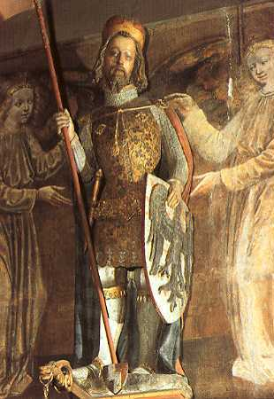
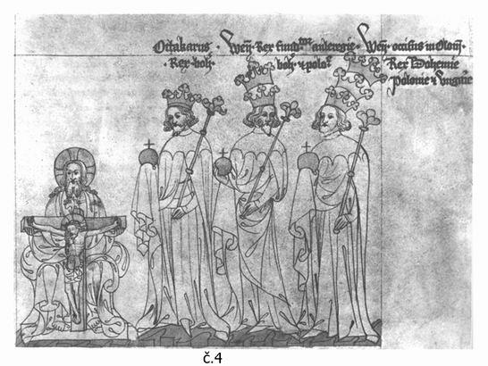
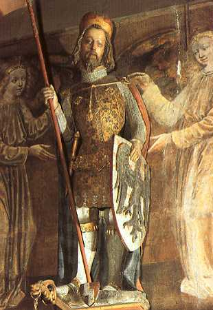
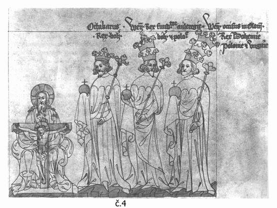
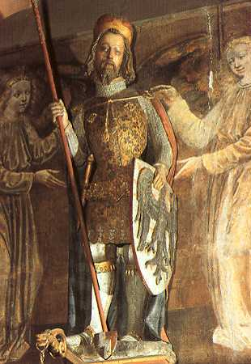
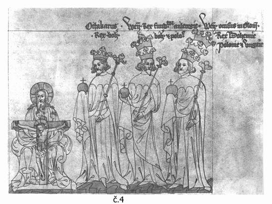

|
Přemyslovci byli první česká knížecí a královská dynastie (tzv. odnepaměti až do 4. srpna 1306), dále vládli také v Rakouských zemích (1251 1278), Polsku (1300 1306) a Uhersku (1301 1305). Ve vedlejší (levobočné) opavské linii Přemyslovci vymřeli (po meči) až roku 1521. Přemyslovci byli jedinou původem českou (tedy „domácí“) panovnickou dynastií. Osobou krále Václava III. vymřel rod po meči a královská linie se po několika letech bojů o následnictví přenesla skrze sňatek Elišky Přemyslovny s Janem Lucemburským na lucemburskou dynastii. V českých zemích nadále (s výjimkou Jiřího z Poděbrad) vládli již jen panovníci s původem mimo domácí rody, nicméně vesměs šlo o potomky Přemyslovců v nepřímých (kognatických) liniích. |

